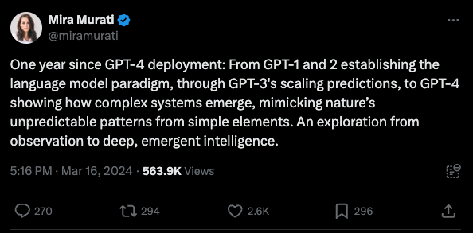
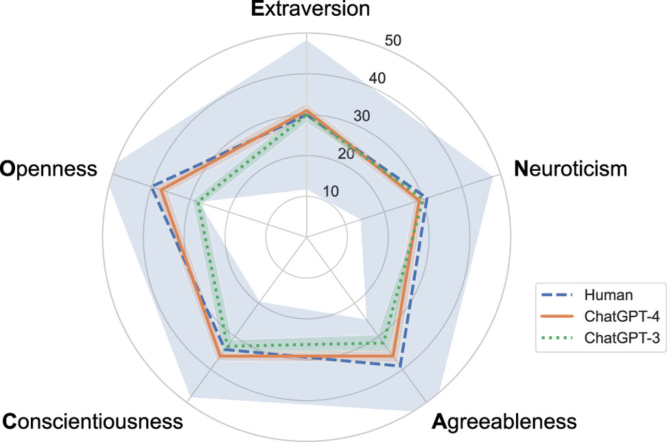
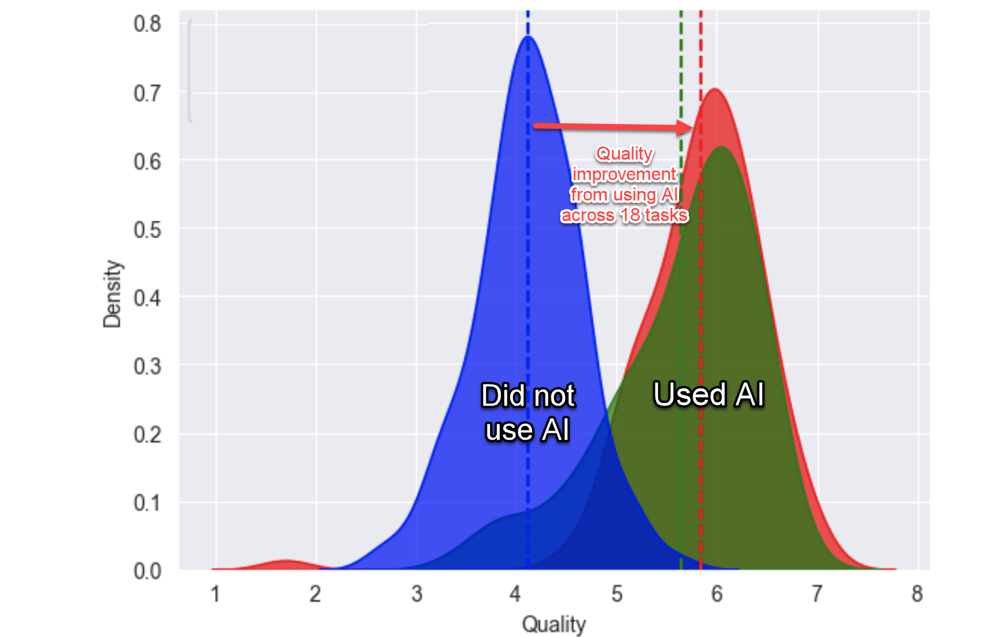
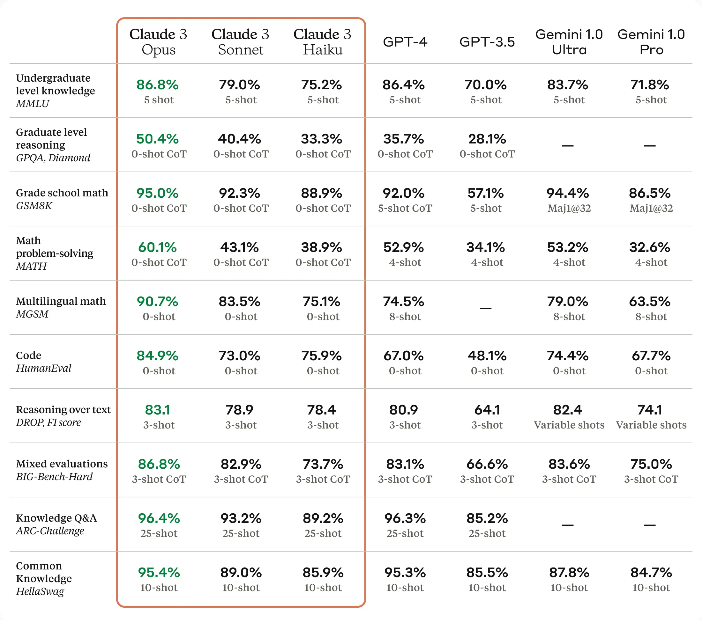
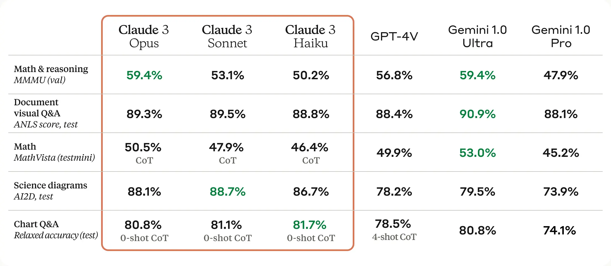
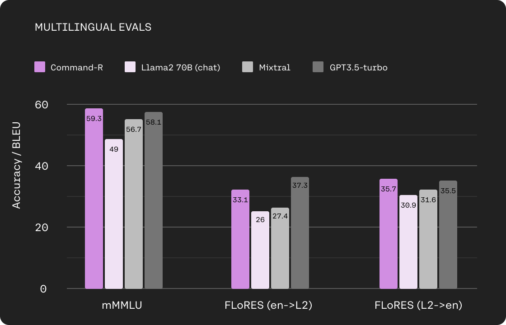
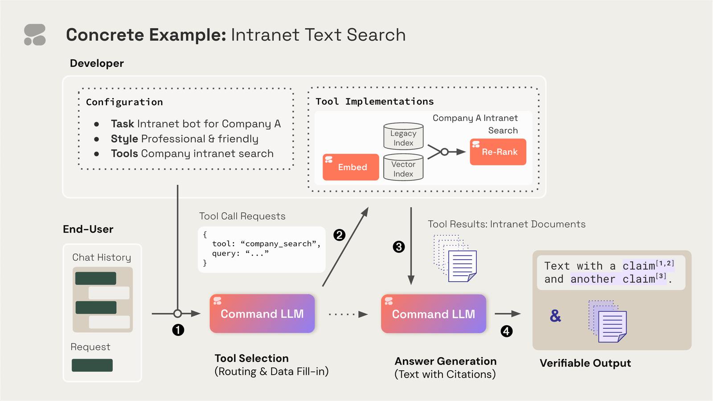
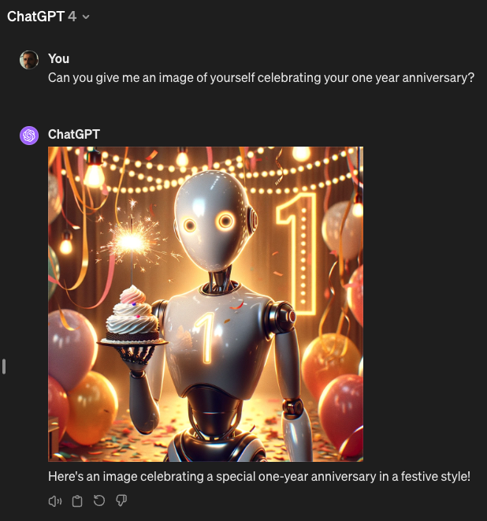

It feels like a lifetime, but it’s only been a year!
March 2023 marked a turning point in the field of artificial intelligence with the release of OpenAI’s GPT-4. This powerful language model, boasting significant advancements over its predecessors, sent shockwaves through various industries and ignited discussions about the future of human-machine interaction. One year later, it’s clear that GPT-4’s impact has been wide-ranging and continues to evolve.

One of the most notable effects has been the acceleration of AI acceptance. GPT-4’s ability to perform exceptionally on standardized tests, generate human-quality writing, and integrate seamlessly with multimodal data like images and sound, has fostered a sense of legitimacy for large language models. This has emboldened researchers and businesses to explore AI applications with greater confidence.
In the course of evaluating the competencies of GPT-4, OpenAI subjected the model to a series of standardized academic and professional examinations, including the Uniform Bar Exam, the Law School Admission Test (LSAT), the Graduate Record Examination (GRE) Quantitative section, and assorted Advanced Placement (AP) subject tests. GPT-4 demonstrated proficiency across numerous assessments, achieving scores comparable to those of human test-takers. This implies that, were GPT-4 to be evaluated purely on its capacity to perform on these tests, it would possess the qualifications to gain admission into law schools and a broad range of universities.

Prior LLMs often struggled with tasks requiring an understanding of context spread across long stretches of text. With a context windows from 8k to 32k tokens, GPT-4 was able to analyze a much larger chunk of text, allowing it to grasp complex relationships between ideas and follow long-range dependencies.
On September 25th, 2023, OpenAI announced the rollout of two new features that extend how people can interact with its recent and most advanced model, GPT-4: the ability to ask questions about images and to use speech as an input to a query. Then, on November 6th, 2023, OpenAI announced API access to GPT-4 with Vision. This functionality marked GPT-4’s move into being a multimodal model. This means that the model can accept multiple “modalities” of input – text and images – and return results based on those inputs.
After a year, GPT-4 remains one of the most advanced LLMs, even though the competition is fierce and with formidable opponents. If the rumors are confirmed, in the coming months we will have an even more powerful version that will continue to amaze us, just like the previous ones.

Outstanding achievements
The Turing Test
What is about
The Turing Test, introduced by British mathematician and computer scientist Alan Turing in 1950, is a benchmark for evaluating a machine’s ability to exhibit intelligent behavior indistinguishable from that of a human. In his seminal paper, “Computing Machinery and Intelligence,” Turing proposed the question, “Can machines think?” and introduced the concept of the “imitation game” as a criterion for machine intelligence. The test involves a human judge engaging in natural language conversations with both a machine and a human without seeing them. If the judge cannot reliably tell the machine from the human, the machine is said to have passed the Turing Test. This test has become a fundamental concept in the philosophy of artificial intelligence, sparking debates about the nature of intelligence and the potential of machines to emulate human-like consciousness and reasoning.
The Turing Test’s significance lies in its simplicity and profound implications. It provides a straightforward criterion for intelligence that does not rely on the machine’s ability to replicate the human brain’s workings but rather on the outcome of its interactions. Passing the Turing Test is considered a milestone for AI, suggesting that the machine can replicate human-like responses under certain conditions, thereby challenging the distinctions between human and machine intelligence.
OCEAN Big-5
Expanding on the OCEAN Big-5, also known as the Big Five personality traits, it’s a model based on common language descriptors of personality. These traits represent broad dimensions of human personality and include:
Openness to experience: Characterized by imagination, creativity, and a willingness to try new things. High openness indicates a person who enjoys novelty, variety, and intellectual pursuits. Lower openness may suggest a more conventional and practical orientation.
Conscientiousness: Involves self-discipline, orderliness, and a drive for achievement. Highly conscientious individuals are organized and responsible, often with a strong work ethic. Lower scores may indicate a more relaxed or spontaneous approach to life.
Extraversion: Denotes sociability, excitement-seeking, and positive emotions. Extroverts are typically energetic and enjoy being around other people, while introverts (lower extraversion) may prefer solitude and more subdued environments.
Agreeableness: Reflects a person’s altruistic, cooperative, and compassionate nature. High agreeableness is associated with trust and helpfulness, whereas lower agreeableness may manifest as skepticism or competitive behavior.
Neuroticism: Pertains to emotional stability and the tendency to experience negative emotions. Higher neuroticism scores indicate a greater likelihood of feeling anxious, depressed, or angry, while lower scores suggest a calmer and more resilient disposition.
These traits provide a framework for understanding human personality and predicting a wide range of behaviors, from academic and occupational success to relationships and well-being. In the context of AI, applying the OCEAN Big-5 to evaluate chatbots like ChatGPT allows researchers to assess how closely these systems mimic human personality traits, contributing to the ongoing exploration of machine “personality” and its implications for human-AI interaction.
The Research from Jackson et al.
A research consortium led by Matthew Jackson, who holds the William D. Eberle Professorship of Economics within Stanford University’s School of Humanities and Sciences, conducted an empirical analysis of the behavioral and personality attributes of the AI-driven entities within ChatGPT, employing methodologies derived from psychology and behavioral economics. Their findings, documented in the paper A Turing test of whether AI chatbots are behaviorally similar to humans published in the Proceedings of the National Academy of Sciences, demonstrated that ChatGPT 4, exhibited indistinguishability from human participants in behavioral assessments. Notably, when the AI opted for atypical human behavioral patterns, it manifested increased levels of cooperativeness and altruism.
This investigative endeavor subjected versions 3 and 4 of ChatGPT to a prevalent personality assessment alongside a series of behavioral experiments designed to forecast socio-economic and ethical decision-making tendencies. These experiments encompassed standardized scenarios that required participants to make choices on dilemmas such as betraying a complicit criminal or allocating monetary resources under various incentive structures. The AI responses were benchmarked against a dataset comprising over 100,000 human participants spanning 50 nations.
Within the OCEAN Big-5, ChatGPT version 4 aligned with the normal human range for these traits but ranked in the lower third percentile in terms of agreeableness compared to the human sample. Despite passing the Turing Test, this level of agreeableness suggests limited social appeal.

Comparative analysis between versions 3 and 4 revealed significant advancements in the latter’s performance, with version 3 displaying agreeableness and openness to experience at the lower end of the human spectrum, indicative of a lesser capacity for novel ideas and experiences.
The methodology for assessing AI behavior in the experimental games involved calculating the frequency of specific actions (e.g., equitable distribution of funds) among both human participants and the AI. Subsequently, the researchers compared a randomly selected human action to one from the AI sessions to ascertain the likelihood of human origin. In the majority of these exercises, actions taken by version 4 were more consistently aligned with human behavior than those of version 3, which did not meet the Turing Test criteria.
Impact on Work
The study Navigating the Jagged Technological Frontier: Field Experimental Evidence of the Effects of AI on Knowledge Worker Productivity and Quality by Dell’Acqua et al. explores the impact of artificial intelligence (AI), specifically Large Language Models (LLMs) like GPT-4, on the productivity and quality of work among knowledge workers at Boston Consulting Group (BCG). This comprehensive experiment involved 758 consultants and aimed to understand how AI affects complex, knowledge-intensive tasks.

The study introduces the concept of a “jagged technological frontier,” suggesting that AI capabilities are uneven across different tasks. Some tasks are significantly enhanced by AI, leading to improved productivity and quality, while others, seemingly similar in difficulty, lie outside AI’s current capabilities and can lead to decreased performance when AI is utilized.
Participants were divided into three groups: a control group with no AI access, a group with access to GPT-4, and a group with GPT-4 access plus a prompt engineering overview. The findings revealed that for tasks within AI’s capabilities, the use of AI led to a notable increase in both the quantity and quality of work. Consultants were able to complete more tasks and with better outcomes, demonstrating that AI can be a powerful tool for augmenting human capabilities in knowledge work.
However, for tasks selected to be outside the AI’s frontier, reliance on AI resulted in a decrease in performance. This highlights the importance of understanding AI’s limitations and suggests that indiscriminate use of AI can have negative consequences.
The study also observed two distinct patterns of AI integration among successful users: “Centaurs,” who strategically divided tasks between themselves and AI, and “Cyborgs,” who integrated AI more fully into their workflow. These findings suggest varying approaches to integrating AI into professional tasks, emphasizing the need for users to adapt their strategies based on the task at hand and AI’s capabilities.
In summary, the study provides empirical evidence on the dual role of AI in enhancing and sometimes detracting from professional knowledge work. It highlights the need for careful consideration of when and how to deploy AI tools, as well as the potential for AI to significantly impact work processes and outcomes within its capabilities. The concept of the jagged technological frontier offers a framework for understanding the complex and evolving relationship between AI and human work, underscoring the importance of navigating this frontier effectively to harness the benefits of AI while mitigating its risks.
March 2024 landscape
OpenAI current offering
GPT-4 is available in the OpenAI API to paying customers. Like gpt-3.5-turbo, GPT-4 is optimized for chat but works well for traditional completions tasks using the Chat Completions API. Learn how to use GPT-4 in our text generation guide.
| MODEL | DESCRIPTION | CONTEXT WINDOW | TRAINING DATA |
|---|---|---|---|
| gpt-4-0125-preview | GPT-4 Turbo The latest GPT-4 model intended to reduce cases of “laziness” where the model doesn’t complete a task. Returns a maximum of 4,096 output tokens. Learn more. |
128,000 tokens | Up to Dec 2023 |
| gpt-4-turbo-preview | Currently points to gpt-4-0125-preview. |
128,000 tokens | Up to Dec 2023 |
| gpt-4-1106-preview | GPT-4 Turbo model featuring improved instruction following, JSON mode, reproducible outputs, parallel function calling, and more. Returns a maximum of 4,096 output tokens. This is a preview model. Learn more. | 128,000 tokens | Up to Apr 2023 |
| gpt-4-vision-preview | GPT-4 with the ability to understand images, in addition to all other GPT-4 Turbo capabilities. Currently points to gpt-4-1106-vision-preview. |
128,000 tokens | Up to Apr 2023 |
| gpt-4-1106-vision-preview | GPT-4 with the ability to understand images, in addition to all other GPT-4 Turbo capabilities. Returns a maximum of 4,096 output tokens. This is a preview model version. Learn more. | 128,000 tokens | Up to Apr 2023 |
| gpt-4 | Currently points to gpt-4-0613. See continuous model upgrades. |
8,192 tokens | Up to Sep 2021 |
| gpt-4-0613 | Snapshot of gpt-4 from June 13th 2023 with improved function calling support. |
8,192 tokens | Up to Sep 2021 |
| gpt-4-32k | Currently points to gpt-4-32k-0613. See continuous model upgrades. This model was never rolled out widely in favor of GPT-4 Turbo. |
32,768 tokens | Up to Sep 2021 |
| gpt-4-32k-0613 | Snapshot of gpt-4-32k from June 13th 2023 with improved function calling support. This model was never rolled out widely in favor of GPT-4 Turbo. |
32,768 tokens | Up to Sep 2021 |
OpenAI pricing
GPT-4 Turbo
| Model | Input | Output |
| gpt-4-0125-preview | $10.00 / 1M tokens | $30.00 / 1M tokens |
| gpt-4-1106-preview | $10.00 / 1M tokens | $30.00 / 1M tokens |
| gpt-4-1106-vision-preview | $10.00 / 1M tokens | $30.00 / 1M tokens |
GPT-4
| Model | Input | Output |
| gpt-4 | $30.00 / 1M tokens | $60.00 / 1M tokens |
| gpt-4-32k | $60.00 / 1M tokens | $120.00 / 1M tokens |
Competitors
Now in 2024, there is a fierce competition from Anthropic, Cohere, Google, and others.
Anthropic
Claude 3 family of models employ various training methods, such as unsupervised learning and Constitutional AI. A key enhancement in the Claude 3 family is multimodal input capabilities with text output, allowing users to upload images (e.g., tables, graphs, photos) along with text prompts for richer context and expanded use cases.
Opus, the most powerful model from Anthropic, outperforms GPT-4, GPT-3.5 and Gemini Ultra on a wide range of benchmarks. This includes topping the leaderboard on academic benchmarks like GSM-8k for mathematical reasoning and MMLU for expert-level knowledge.
Sonnet, the mid-range model, offers businesses a more cost-effective solution for routine data analysis and knowledge work, maintaining high performance without the premium price tag of the flagship model. Meanwhile, Haiku is designed to be swift and economical, suited for applications such as consumer-facing chatbots, where responsiveness and cost are crucial factors.

In addition, Claude 3 models demonstrate sophisticated computer vision abilities on par with other state-of-the-art models. This new modality opens up use cases where enterprises need to extract information from images, documents, charts and diagrams.

Cohere
While OpenAI has garnered widespread attention through the viral phenomenon of its ChatGPT chatbot, Cohere has adopted a more focused strategy, engaging directly with corporate clients to customize its AI models according to their unique requirements. This approach enables Cohere to achieve greater cost efficiency compared to competitors who aim at broad consumer markets.
| Cohere API Pricing | $ / M input tokens | $ / M output tokens |
|---|---|---|
| Command | $1.00 | $2.00 |
| Command-R | $0.50 | $1.50 |
Command-R integrates seamlessly with Cohere’s Embed and Rerank models, providing retrieval-augmented generation (RAG) functionalities. A distinctive feature of Command-R is its ability to provide explicit citations in its outputs, reducing the occurrence of fabrications and facilitating user access to further information from the original sources.

The capability of Command-R to utilize external tools marks a significant advancement for developers in the corporate sector. This feature permits the model to link with external resources such as search engines, APIs, databases, and functions, thereby enriching its functionality through the utilization of data and operations available via these tools. This aspect is especially beneficial for businesses that store a substantial portion of their data in external repositories.
The adoption of tool usage opens the door to a broad spectrum of new applications. For example, developers can instruct Command-R to suggest a specific tool or a combination thereof, along with guidance on their usage. This enables chatbots to interact with customer relationship management (CRM) systems to update deal statuses or to employ Python interpreters for performing data science tasks. Additionally, it allows for the transformation of user inquiries into search commands for vector databases or search engines, empowering work assistants to autonomously navigate through various databases and platforms to gather pertinent information or execute comparative evaluations.
Tool usage with Command-R involves a four-stage process: initially, developers configure which tools the model can access and the format of interactions (e.g., API calls, JSON-formatted instructions). Command-R then judiciously selects the suitable tools and parameters for these interactions. Subsequently, developers execute these tool interactions, obtaining results, which are then fed back into Command-R to generate the final response.

Beyond its RAG and tool integration features, Command-R benefits from an extended context window capability of up to 128k tokens and offers competitive pricing for Cohere’s hosted API service. Moreover, the model delivers robust performance across ten primary languages, encompassing English, French, Spanish, Italian, German, Portuguese, Japanese, Korean, Arabic, and Chinese.
Let’s Celebrate!
